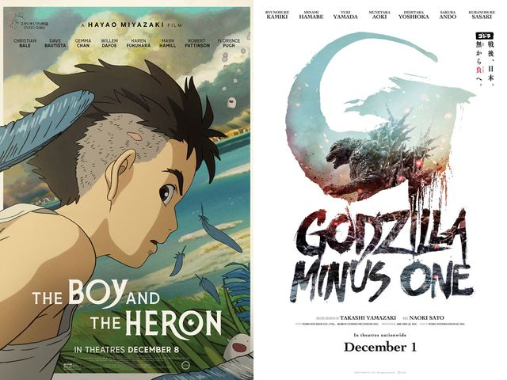

気になった2024年のニュース・出来事について
私が2024年に起きた出来事の中で特に気になったことは日本の映画である、
「君たちはどう生きるか」と「ゴジラ-1.0」がアカデミー賞を受賞したことです。

なぜ気になったのか
2024年は年明けから能登半島地震が発生し、翌日には
羽田空港地上衝突事故が起きるなど
暗い出来事が多数起きてしまいました。
このニュースは日本のスタジオジブリが手掛けた「君たちはどう生きるか」、日本発祥のゴジラを扱った「ゴジラ-1.0」が世界的に
認められたことで、日本独自の文化で世間の明るさを取り戻す一端を担うことができたのではないかと考えたからです。
このニュースについて考えたこと
アカデミー賞を受賞したことにより、この２つの作品をみたことのない人が興味を持つきっかけになったのではないかと思います。
ゴジラ-1.0は戦後間もない日本が"核"を連想させるゴジラと戦いながら復興へと向かっていく物語です。戦争で生きる希望をなくしてしまった
登場人物が、災害に立ち向かいながら再び生きることへの気力を取り戻していくこの映画の内容は能登半島地震を始めとした日本でおきた苦しい
出来事を乗り越える力をくれるのではないかと考えます。